DeepSeek 把自己的 Agent 框架开源了，叫 DeepSeek Harness，命令行名字是 dsh。
它把 Agent 拆成了一堆能单独换掉的零件。
我拉下来跑了一遍。默认配置装了 133 个插件，其中一个叫 agent-loop，Agent 循环本身也在列表里。
Agent Harness 是什么
模型是发动机，harness 是发动机外面那台车。
DeepSeek V4 会写代码，但它不会自己打开文件、跑命令、看报错再改一遍。这些活是 harness 干的。Claude Code、Codex 都是 harness，只不过是闭源的成品车，你只能坐进去开。
dsh 把整台车拆成了零件。官方说法是「一切皆插件」：模型适配器、工具、会话日志、Agent 循环，全是插件。底层是一个叫 Cordis 的插件框架，插件之间靠服务名互相找，不靠 import 。
在设置面板里能直接看到这份清单。
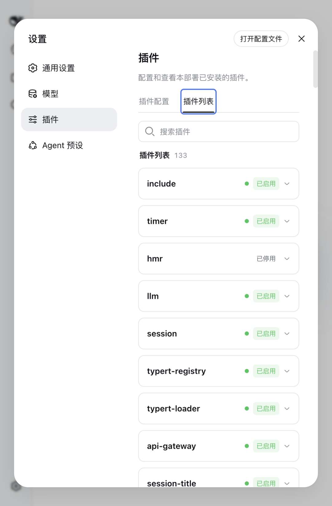
设置里的插件列表，一共 133 个
搜一下 agent-loop，它就在里面，配置状态「已启用」，Cordis 状态「已挂载」。
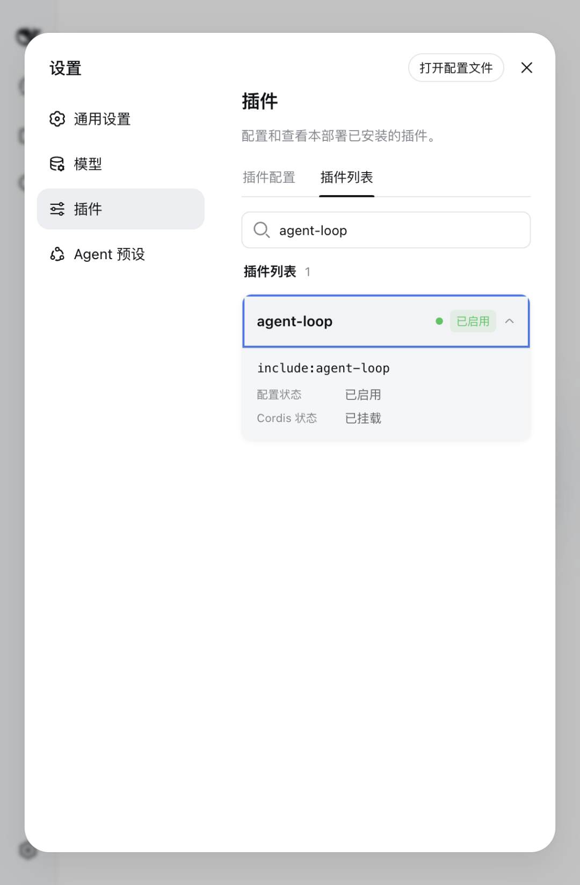
agent-loop 也是一个可开关的插件
别的产品让你调参数，它让你换零件。
跑起来
第 1 步：确认 Node 版本
终端里敲：
node -v
它要求 22.19 以上，或者 24 以上。我本机是 v22.22.3，够用。版本不够的先去 nodejs.org 升级，这一步过不了，后面全是报错。
第 2 步：一条命令启动
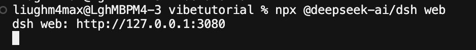
进到你想让它干活的项目目录，然后：
npx @deepseek-ai/dsh web
第一次会拉包，等一会儿。跑起来只有一行输出：
dsh web: http://127.0.0.1:3080
浏览器打开 http://127.0.0.1:3080 就是界面。它只监听 127.0.0.1，只有你这台机器能连，不用担心装完就暴露在公网上。
第 3 步：过掉两个弹窗
第一个是「内测声明」，0.1 版本还在面向开发者测试，核心插件和基础 API 都会快速迭代。点「继续」。
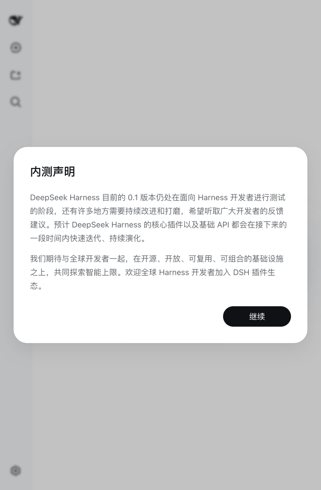
首次打开的内测声明
第二个直接要 API Key，填 DeepSeek 官方的就行。没有的话点「稍后配置」也能进去，后面在设置里补。
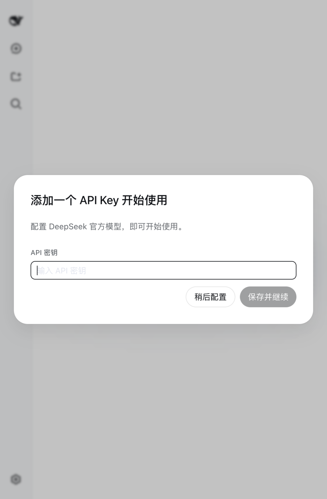
填 API Key 的引导弹窗
进来是主界面，标语「探索未至之境」，右边挂着「预览版」的标签。
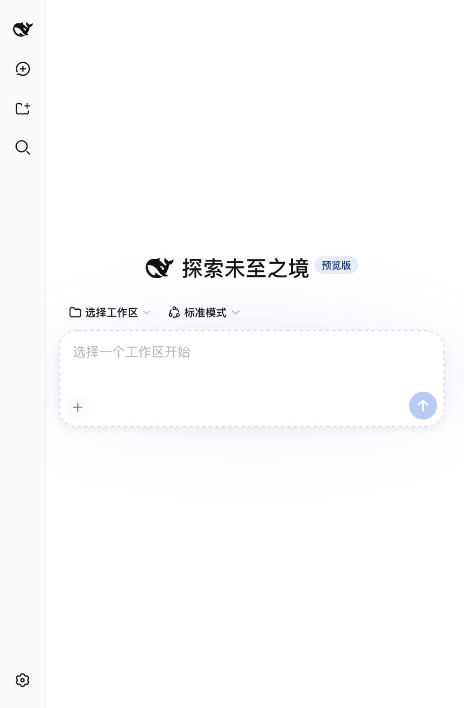
主界面
第 4 步：选工作区
这一步最容易卡住，先说清楚。
界面中间那个输入框这时候是点不动的，里面写着「选择一个工作区开始」。而「选择工作区」下拉第一次点开是空的，什么都没有。你得先添加，左边侧边栏那个带加号的文件夹图标就是入口。
它弹的是你操作系统自己的文件夹选择框，不是网页里的输入框。系统那个「选择文件夹」窗口，Windows 走系统对话框，Linux 用 zenity。挑一个目录确定，输入框就解锁了。
第 5 步：发个任务看看
工作区选好之后，输入框那一圈会多出几个东西：上方左边是工作区名字，右边是模式（默认「标准模式」），右下角是模型和推理等级，左下角那个盾牌图标是这次会话的访问权限。
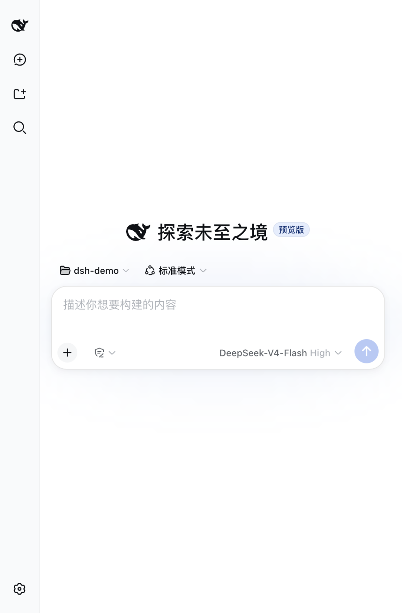
选好工作区之后的界面
我拿一个演示项目试了一把：一个 fizzbuzz.py 加四个单元测试，代码里埋着经典 bug，15 该返回 FizzBuzz 却返回了 Fizz。任务用中文说：
跑一下这个项目的测试，有失败的就修掉，修完再跑一遍确认全部通过。
回车之后它自己走完了一串：bash 看目录、glob 找配置文件，认出这是个 Python 项目，读三个文件，跑一遍测试确认失败，改代码，再跑一遍。
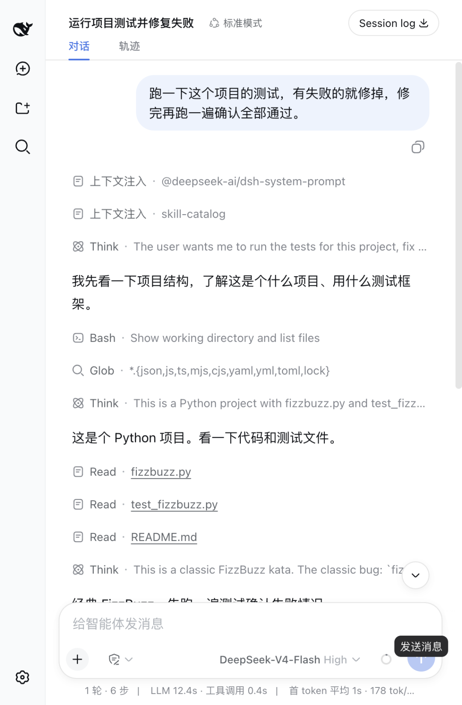
Agent 自己走完的过程
最上面那两行「上下文注入」，一行系统提示词，一行 skill 目录。这就是 harness 平时替你干、又不给你看的活。
诊断写得比我预期的准：「fizzbuzz(15) 先命中 n % 3 == 0 提前返回了 Fizz，而且代码里根本没有同时能被 3 和 5 整除的分支」。
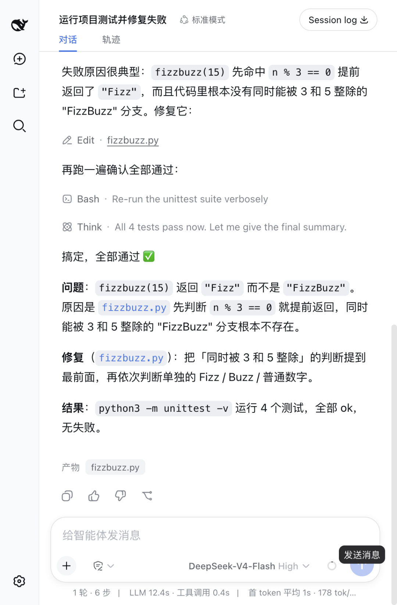
执行结果
底下那行统计是 1 轮 6 步、LLM 12.4 秒、工具调用 0.4 秒，整趟只用掉 2% 上下文。我去目录里核对过，文件真被改了，四个测试全 ok。
标题旁边还有个「轨迹」标签，把每一步的入参和返回值摊成一条时间线，哪步慢、哪步返回了什么。
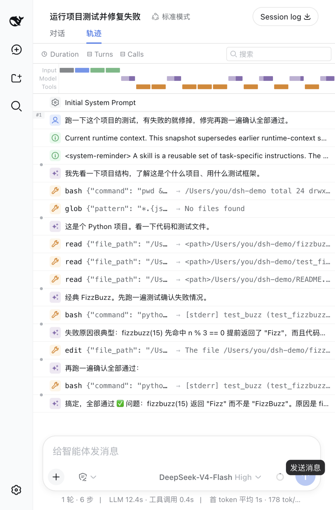
轨迹视图
碰上当前权限管不了的操作，界面会先弹出来问你，等你点了才继续。
四个模式
输入框上方有个模式选择器。
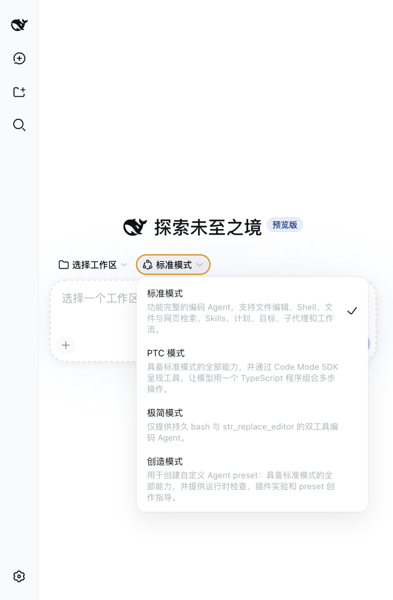
四个内置模式
PTC 模式值得单说。普通 Agent 干活是一次调一个工具，读文件、等结果、再改文件、再等结果。PTC 换了玩法：模型写一段 TypeScript 程序，工具在程序里就是能直接调的函数，多步操作一次跑完。
极简模式反过来，把工具砍到只剩两把。官方 Python SDK 教程的最小示例和跑基准测试用的都是这套。工具越少，行为越可控。
设置里的「Agent 预设」页把四个摆在一起，每张卡片右下角有复制按钮，复制一份就能改成自己的。
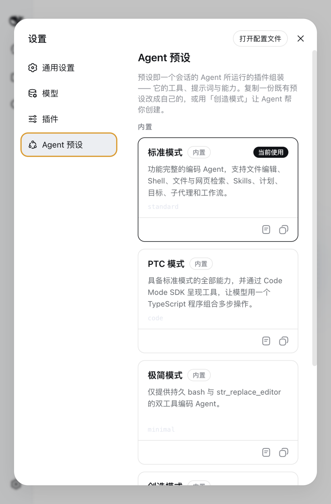
Agent 预设页
页面上还写着一句：用「创造模式」让 Agent 帮你创建预设。意思是你不用手写配置，让 Agent 去改自己的插件组装。
模型不绑 DeepSeek
虽然是 DeepSeek 开源的，模型这块没锁死。
设置里的「模型」页默认预置两个：deepseek-v4-flash 和 deepseek-v4-pro。
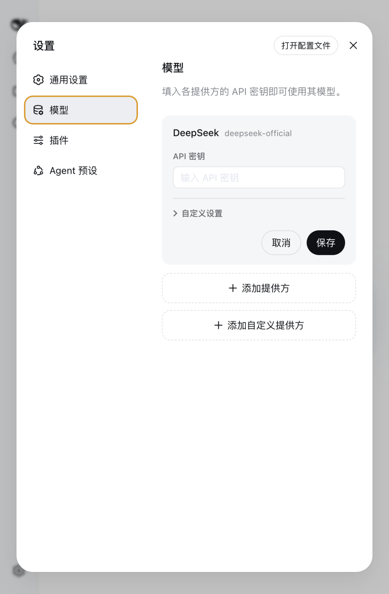
模型设置页
下面有「添加提供方」，点开是个 36 项的下拉：anthropic、openai、google、xai、groq、mistral、amazon-bedrock、openrouter 都在，国内的有 moonshotai、kimi-coding、minimax、zai、qwen、xiaomi。
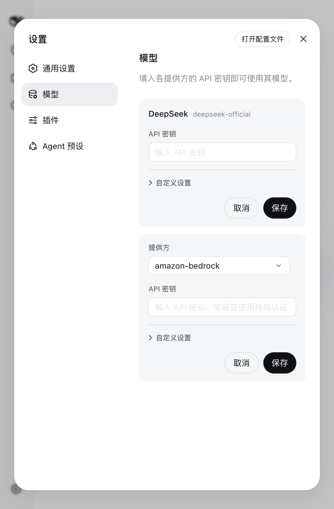
添加提供方
API Key 那一栏写着「或留空使用环境认证」，也就是可以走环境变量，不用把 Key 明文填进界面。旁边有个「获取可用模型」按钮，填完 Key 点一下就能把那家的模型列表拉过来。
都不在列表里的，还有「添加自定义提供方」，OpenAI 兼容的接口自己填地址。
你能拿它跑 Claude，也能拿它跑本地模型，DeepSeek 不管。
它能把 Claude Code 和 Codex 当子Agent
这是我翻源码时最意外的一处。
子 Agent 在 dsh 里也是个可替换的位置。官方放了好几个实现：进程内新建一个、从父 Agent 历史 fork 一个、走 ACP 协议开进程外的，然后是这两个。
subagent-codex 启动一个真实的 Codex app-server 当子 Agent，subagent-claude-code 通过官方 Claude Agent SDK 启动一个真实的 Claude Code 当子 Agent。
主 Agent 用 DeepSeek，派活时把子任务扔给 Claude Code 去做，这套接线官方已经写好了。
还有一处：你之前给 Claude Code 或 Codex 写过的 hooks.json，dsh 有桥接插件，指过去原来的 shell 钩子照样跑。
不想开浏览器的两条路
一次性任务用无头模式，跑完打印结果就退出：
npx @deepseek-ai/dsh --profile headless \
"跑一下测试，失败的修掉"
Key 没配好的话，报错会直接告诉你怎么办，我实测是这样：
dsh:MISSING_CREDENTIAL:llm-deepseek:noAPIkey
forproviderroute"deepseek-official";store
DEEPSEEK_API_KEYthroughthecredentialsservice
(thewebModelspagewritesit),orexport
DEEPSEEK_API_KEYinthelaunchingenvironment
照它说的，环境变量给一份就行：
exportDEEPSEEK_API_KEY=sk-你的key
想在自己程序里调的，官方发了 Python SDK：
pip install deepseek-harness-sdk
这个 SDK 装完自带运行时，不需要你系统里装 Node。
用之前先看这几条
它明确说了会有破坏性变更。 README 和首屏弹窗都写着开发者预览，核心插件和基础 API 都在快速迭代。现在拿它跑严肃的生产流程，下次升级可能要重配一遍。
默认权限是 Workspace Write。 新会话默认只能写工作区里的东西。这个默认值给得对，别急着放宽权限。
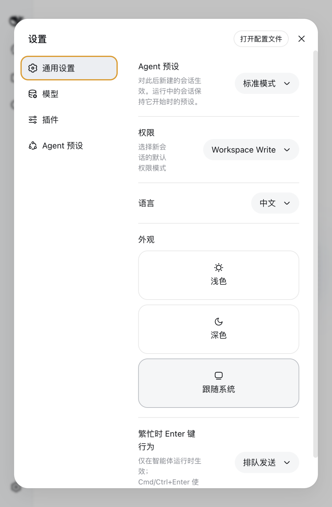
通用设置里的默认权限
配置在 ~/.dsh。 设置面板右上角有「打开配置文件」，profile 和存储都在这个目录下，想彻底卸干净就删它。
插件行为也能调。 「插件」页里的「Agent 循环」展开有一项「并行工具调用数」，默认 10，意思是同一步里最多同时跑 10 个能并行的工具调用。
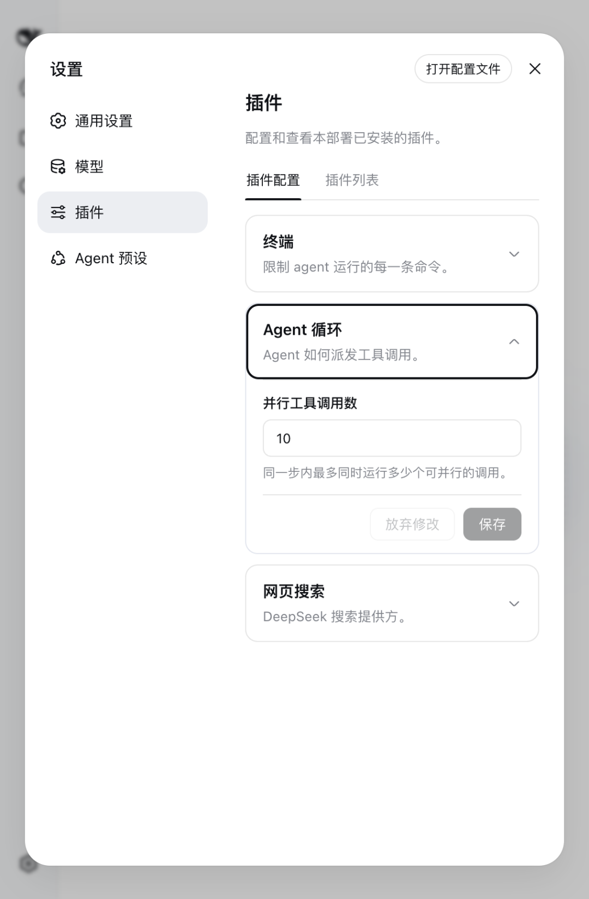
插件配置里的并行度
写在最后
拿它当 Claude Code 的平替，现在还差一截：预览版，界面和能力都在动。
但市面上的 Agent 产品都在替你决定给几把工具、循环怎么转、上下文怎么压。dsh 把这些决定摊开放在设置面板里，133 个插件，每个带开关。
只想有个 AI 帮你写代码，装 Claude Code；想搞明白 Agent 里面怎么转的，甚至想自己造一个，装这个。
最后夸一句：架构、40 多个子系统、工具清单全是中英双语，想读源码的看仓库里的 docs/architecture.zh.md 。
我的免费Agent教程小程序，不用注册，打开就能读，👇 点下面的卡片直接进去。
请欣赏彩蛋：
视频来自网络
如果你觉得本篇文章有收获，欢迎关注、点赞、转发。
往期文章：
跟着 Anthropic 学 AI Agent，从提示词到架构设计，Claude优化之路，12篇，7万字